Un agente que termina el trabajo.An agent that finishes the job.
Cuatro roles —Arquitecto, Albañil, Inspector, Cronista— trabajan en ciclo PLAN → STEP → VERIFY → LEARN hasta que el código pasa. Corre en tu terminal o como app de escritorio. Multi-modelo, memoria persistente, y te dice la verdad sin rodeos.
Four roles —Architect, Builder, Inspector, Chronicler— work a PLAN → STEP → VERIFY → LEARN loop until the code passes. Runs in your terminal or as a desktop app. Multi-model, persistent memory, and blunt about what's wrong.
Instalar la terminal (TUI)
Install the terminal (TUI)
Mímir dentro de tu consola: escribes y respondes ahí mismo, sin ventanas. Lo más simple es por npm; también hay un binario portable por plataforma. ¿Quieres la app con ventana? Salta a App de escritorio.
Mímir inside your console: you type and it answers right there, no windows. Simplest via npm; there's also one portable binary per platform. Want the windowed app? Jump to Desktop app.
Binarios de terminal (TUI)
Terminal binaries (TUI)
Ejecutables portables. Se corren directo, no se instalan en el sistema.
Portable executables. Run directly — they don't install into the system.
macOS: estos binarios aún no están firmados con Apple Developer. Gatekeeper los bloquea — corre xattr -d com.apple.quarantine mimir-macos-arm64 antes de ejecutar, o clic derecho → Abrir.
macOS: these binaries aren't Apple-notarized yet. Gatekeeper blocks them — run xattr -d com.apple.quarantine mimir-macos-arm64 first, or right-click → Open.
App de escritorio
Desktop app
El mismo motor, con interfaz gráfica (Tauri v2 + React) — no es la terminal: se instala como cualquier app y abre su ventana. Chat con markdown, panel del ciclo en vivo, selector de modelo en caliente, gráficas de tokens y costo, botón PÁRAME, y ajustes visuales de API keys y priority list.
Same engine, with a graphical interface (Tauri v2 + React) — not the terminal: it installs like any app and opens its own window. Markdown chat, live loop panel, hot model switching, token/cost charts, a STOP button, and visual settings for API keys and the priority list.
macOS: misma nota de Gatekeeper que arriba — sin firma de Apple por ahora, clic derecho → Abrir. Linux: instala el .deb con sudo dpkg -i o el .rpm según tu distro.
macOS: same Gatekeeper note as above — no Apple signature yet, right-click → Open. Linux: install the .deb with sudo dpkg -i, or the .rpm for your distro.
Auto-updates firmados
Signed auto-updates
La app de escritorio revisa un manifiesto firmado al arrancar. Si hay una versión más nueva, la descarga y la instala sola. Cada instalador va firmado con una clave incrustada en la app — un build alterado no se instala.
The desktop app checks a signed manifest on launch. If a newer version exists, it downloads and installs it. Every installer is signed with a key baked into the app — a tampered build won't install.
Verificado de punta a punta el 2026-07-23. Se descargó el .dmg y el .msi reales del release público, se extrajo la firma del updater.json y se validó contra la clave pública incrustada en la app. Una instalación vieja (1.0.0–1.0.5) detecta la 1.0.6 y se actualiza sola.
Verified end-to-end on 2026-07-23. The real .dmg and .msi were pulled from the public release, the signature was extracted from updater.json and validated against the public key baked into the app. An old install (1.0.0–1.0.5) detects 1.0.6 and updates itself.
Detecta, descarga e instala solo.
Detects, downloads and installs on its own.
.deb/.rpm sin auto-update (sin AppImage — límite de linuxdeploy con el sidecar de Bun). Bajas la nueva versión a mano.
.deb/.rpm without auto-update (no AppImage — linuxdeploy limitation with the Bun sidecar). Grab new versions manually.
La terminal se actualiza con npm update -g mimir-cli o bajando el binario nuevo.
The terminal build updates via npm update -g mimir-cli or a fresh binary.
Inicio rápido
Quick start
El ciclo
The loop
Cada meta corre en un worktree de git aislado. Los roles se turnan; el Inspector es adversarial de verdad y corre con otro modelo. Nada se fusiona a tu rama hasta que aprueba.
Each goal runs in an isolated git worktree. Roles take turns; the Inspector is genuinely adversarial and runs on a different model. Nothing merges to your branch until it approves.


Documentación completa: MIMIR.md · MIMIR-generated.md (generada desde el código). Full docs: MIMIR.md · MIMIR-generated.md (generated from source).
Los 4 roles
The 4 roles
Cada rol corre con el modelo más barato capaz de su trabajo — planear y revisar con uno caro, ejecutar con uno barato, resumir gratis.
Each role runs on the cheapest model that can do its job — plan and review on a top model, execute on a cheap one, summarize for free.
Arquitecto
Architect
Explora el código y desglosa la meta en un checklist.
Explores the code and breaks the goal into a checklist.
Albañil
Builder
Escribe código, corre comandos, instala deps — un paso a la vez.
Writes code, runs commands, installs deps — one step at a time.
Inspector
Inspector
Corre tests y build, lee el diff, aprueba o rechaza con razón.
Runs tests and build, reads the diff, approves or rejects with a reason.
Cronista
Chronicler
Guarda la lección en la bóveda para la próxima vez.
Saves the lesson to the vault for next time.
Modos
Modes
Respuesta directa. Sin herramientas, sin ciclo.
Direct answer. No tools, no loop.
Ciclo completo con plan detallado del Arquitecto.
Full loop with a detailed Architect plan.
Optimizado para codificar. Menos plan, más ejecución.
Optimized for coding. Less planning, more execution.
Flags CLI
CLI flags
| Flag | Qué hace | What it does | Default | |
|---|---|---|---|---|
| --goal | Tu objetivo | Your objective | — | |
| --cwd | Directorio de trabajo | Working directory | actual | current |
| --budget | Presupuesto máximo en USD | Max budget in USD | ilimitado | unlimited |
| --night | Cola de metas nocturna | Overnight goal queue | false | |
| --no-sandbox | Sin aislamiento de git worktree | Skip git worktree isolation | false | |
| --serve | Modo sidecar WebSocket | WebSocket sidecar mode | false | |
| --port | Puerto del sidecar | Sidecar port | 4317 | |
| --setup | Asistente de configuración | Setup wizard | — |
Proveedores
Providers
Ocho proveedores con failover automático. Si uno falla (rate limit, sin key, cuota), pasa al siguiente sin detener el trabajo.
Eight providers with automatic failover. If one fails (rate limit, no key, quota), it moves to the next without stopping.
Adaptadores de terminal
Terminal adapters
Mímir puede ejecutar comandos a través de otras CLIs además de bash — usa la que ya tengas instalada.
Mímir can run commands through other CLIs besides bash — it uses whatever you already have installed.
| Terminal | Terminal | Instalación | Install | Suscripción | Subscription |
|---|---|---|---|---|---|
| Bash | Integrado | Built-in | No | No | |
| Claude Code | npm i -g @anthropic-ai/claude-code | Claude | Claude | ||
| Codex CLI | npm i -g @openai/codex | OpenAI | OpenAI | ||
| OpenCode | npm i -g opencode | No | No | ||
| Aider | pip install aider-chat | No | No |
Configuración
Configuration
API Keys
Variables de entorno o el panel de Ajustes. Las keys se guardan en el keychain del sistema.
Env vars or the Settings panel. Keys are stored in the system keychain.
Priority List
Priority list
Modelos en orden. Failover automático al siguiente si uno falla.
Models in order. Automatic failover to the next on failure.
Seguridad
Security
Las API keys se censuran de logs y salidas de herramientas antes de llegar al modelo.
API keys are censored from logs and tool output before reaching the model.
Paranoico / normal / yolo. Comandos destructivos pasan por confirmación humana.
Paranoid / normal / yolo. Destructive commands require human confirmation.
Cada meta en su worktree de git; snapshot y revert por paso.
Each goal in its own git worktree; snapshot and revert per step.
Bóveda de memoria
Memory vault
Cada lección se guarda en una bóveda local con búsqueda FTS5. Las soluciones pasadas se recuerdan solas cuando aparece una tarea parecida — y si repites un error ya documentado, te lo restriega con fecha.
Every lesson is saved to a local vault with FTS5 search. Past solutions surface on their own when a similar task appears — and if you repeat a documented mistake, it calls it out with a date.